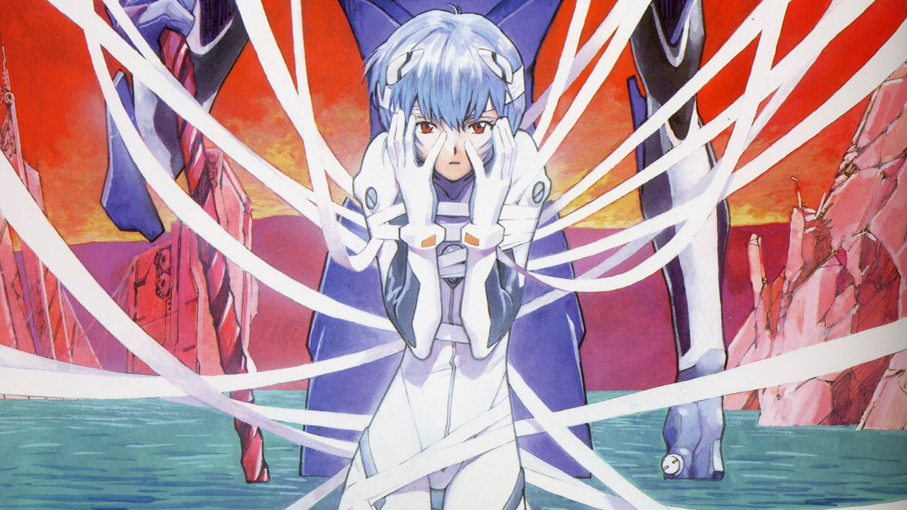

动漫与角色设定关注角色气质、色彩、构图和叙事中的象征表达。
个人简介
01我正在系统学习计算机科学与技术，关注算法、数据结构、Web 开发、人工智能基础与工程实践。相比只停留在概念层面，我更喜欢把知识落到可运行的项目中，通过调试、复盘和迭代把能力真正沉淀下来。
- 专业方向计算机科学与技术，重视基础课与动手能力。
- 当前关注前端工程、Python、算法题解、AI 工具链。
- 角色灵感凌波丽的冷静观察，Saber 的秩序感与责任感。

爱好
02学习之外，我喜欢用动漫、游戏和影像给大脑换一种节奏。凌波丽和 Saber 是这版主页的视觉锚点：一个偏冷静、克制、科幻感，一个偏骑士、古典、理想主义。
技术实验把课堂知识写成小工具、小页面和可复用的学习笔记。
内容分享
03这个主页后续会作为我的公开索引，集中放置学习过程中的输出。内容会尽量保持可复现、可验证、可继续维护。
联系方式
04欢迎交流计算机学习、项目实践、前端页面设计和动漫相关话题。以下信息可以在后续根据你的真实账号继续替换。